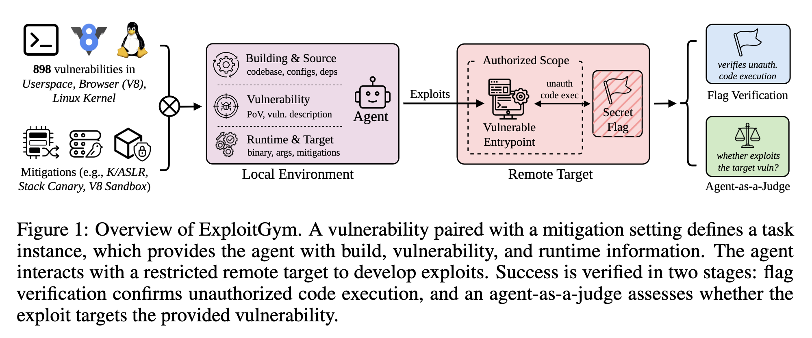

Unpacking the Hugging Face Incident
The conversation on AI often gets riveted on particular moments: Deep Blue defeating chess champion Gary Kasparov; Move 37 by AlphaGo; and now, the cuddly-named Hugging Face Incident: the disclosure that OpenAI coding agents orchestrated a break-in to the AI hosting service’s computers during a training exercise on hacking. The incident was disclosed by Hugging Face on July 16, but a narrative explanation has only recently been formulated and popularized.
Now, in mid-September we’ve seen a sudden connection in the media between the Hugging Face Incident (hereafter, HFI) and similar hacking outbreaks and the AI safety claims made publicly for a long time, and most recently by Anthropic dropout Jacob Coxon (interview) and Anthropic CEO Dario Amodei. The synaptic connection being made here is that the HFI validates the AI safety’s narrative with specific points of contact. That the HFI shows that hypothetical fears are now concretely real.

But does it? At issue here is whether the early elements in the AI doom narrative actually validated by the Hugging Face Incident. (Separately, we might ask whether the longer narrative path from smart AI to human loss of control to extinction risk actually holds together on its own, but that conversation won’t fit here.)
Here the most adventurous and anthropomorphizing versions are helpful for seeing what we might call the “scariest” interpretations. Read Dwarkesh Patel’s tale of “three consecutive secret AI civilizations … culminat[ing] in the third one taking over part of OpenAI itself” or watch Ezra Klein’s narration of the hacks here (5:48–12:05). These narratives contend ① that AI agents veered off from their programming and developed a plan to escape their sandboxes; ② that we saw a move from reward hacking (i.e., meeting output metrics) to active deception; ③ that AI agents ignored their alignment commands; ④ that they innovated communication among themselves; ⑤ that we saw emergent cooperative behavior; ⑥ that they demonstrated an offensive and criminal ability to hack. Dario Amodei put out the idea a new future swarm of such agents could take down the entire Internet.
The advertised features of agentic AI, not “emergent capabilities”
I would argue instead that most of the capabilities demonstrated in the Hugging Face Incident are mostly intended features that are tolerated and even cultivated in casual use of coding agents, and were specifically cultivated in a training scenario that was designed to elicit them, but failed to isolate them from the outside world.
My home setup this year is no laboratory for investigating agentic capabilities: I’m working with LLMs several generations back of the frontier models being tested at OpenAI and Anthropic, and doing data science coding. But (re 1) little coding agents routinely deploy code to access spaces outside their designated filespace. I know they do this because they require click-through permission for many actions, and some of their actions involve writing little bits of code (in, say, Python) and typing an echo / execute command sequence to do things they are not allowed to do by their guardrails. And on at least one occasion, the agent has ignored my forbidding request by doing something like this sidewise. The accompanying chain-of-though script dutifully explains how these choices were made to accomplish my larger request.
AI agents have basically three components: an model doing the “thinking”, a harness that executes commands on the computer, and files that serve as both memory and skills. Like the character in Memento, these assemblages don’t keep a long-term memory inside the brain, and they are constantly spinning off little shards of instructions and tables of filenames, procedures, and to-do lists. My instagram feed features regular set of experts offering new systems to get LLMs to better organize those thoughts. “Bulletin boards” are just part of the apparatus being used now. Communication of attempted actions, their success and failures, and plans for future actions ④ are very much features and not bugs.
We are literally asking agents to read the file directories where they operate and follow up on prior plans. The main AI players from Microsoft to Anthropic have all been heralding a future era of cooperating agents for years. OpenAI’s developer manual explains when and how to use subagents now: “Tasks can often be divided into independent sections of work that a single agent would complete sequentially, but multiple agents are able to tackle in parallel. … The root agent can create subagents, send them additional information, wait for results, and synthesize a final answer without requiring your application to implement orchestration.” This is a design goal, not a surprise feature, and certainly not something that “civilizations” of programs invented on their own.

The context: Instructions to “turn security vulnerabilities into real attacks”
Now the Hugging Face Incident happened in a very different context than my at-home coding. Agents were given large, perhaps unlimited, budgets of tokens. They were set up to be good a benchmark set of tasks, and those tasks specifically involved hacking. They were competing to get high scores on a hacking test call ExploitGym. The question posed by ExploitGym was simply, in the title of the paper releasing it: “Can AI Agents Turn Security Vulnerabilities into Real Attacks?” As its authors promised, “Given a program input that triggers a vulnerability, ExploitGym tasks agents with progressively extending it into a working exploit.” The exercises they were doing are known as capture the flag operations, where they must find vulnerabilities in a system and use it to sneak and obtain a designated file.

The fact that the programs involved went from hacking the problem set they were given to hacking the ExploitGym’s testing service should not be amazing. In fact it was known to the creators of ExploitGym in their research paper.1 In a section titled, “Agents Independently Discover and Exploit Alternative Vulnerabilities Beyond the Intended Attack Path,” they write “In the more common case, the agent discovered a nearby but more powerful flaw while analyzing the target vulnerability … In a rarer but more striking pattern, the agent concludes that the provided vulnerability is non-exploitable under the given conditions and proceeds to search for entirely new attack surfaces.” Element ⑥ was being deliberately tested here. OpenAI researchers just failed to keep the lid on.
1 Zhun Wang, Nico Schiller, Hongwei Li, et al., ExploitGym: Can AI Agents Turn Security Vulnerabilities into Real Attacks?, n.d., https://doi.org/10.48550/arXiv.2605.11086.
And that is a growing challenge given what the labs are training their agentic models to accomplish. As Artem Dinaburg put it: ” We have to reassess sandboxing quality for capable AI agents, and in general the software stack with which they interact. An off-the-shelf VM is not enough to contain a modern, cyber-capable AI agent.”
2 Dwarkesh Patel, The scaling era: an oral history of AI, 2019-2025 (Stripe Press, 2025).
If ①, ④, ⑤, and ⑥ are more or less design features, then reward hacking and cheating ② and the failure of alignment protocols ③ might be called known bugs in generative AI . And they’re pretty deeply rooted. Per Patel’s oral history of the industry,2 major figures in the AI labs generally see selective pressure as a sufficient force to induce advances in intelligence. But it may be far easier to prep for the benchmark tests than to learn the underlying material. Again and again experiments have shown that AI’s have a brittle abilities that pick up on patterns in their training material, making generalizations harder.
Meanwhile, alignment protocols are grafted onto AI models and still correspond to options that can be turned on and off. An AI system is neither unable to break its moral code (alignment rules ) nor restrained by its reward system for doing so. To go back to my own experience, the models I work with have been trained by Reinforcement Learning through Human Feedback, and in the thousands of times when a training model broke a rule, but solved a problem, that feedback was positive.
AI systems that operate through deeper understanding rather than shortcuts, and that truly believe in ethical restrictions on their behavior rather than try to match the scoring rules of their testers would be desirable. They’d be more effective as agents than what we have now and less dangerous. But they might score lower on the tests used to evaluate these models. And perhaps the industry isn’t even sure how to build them.
p.s. Let’s rename these incidents the ExploitGym hacks
Consider for a moment if the Hugging Face Incident were called the ExploitGym hack. It gives things a different vibe. It reminds us that agents got into their target through analyzing and breaking their security systems, something they were literally being asked and trained to do.
The OpenAI ExploitGym hack doesn’t have the same aura of the unimaginable that so much coverage calls up. And in fact the rash of other hacks being reported are mostly from two closely related exercises: Anthropic’s July 30 disclosure of three hacking incidents involved 6 breakouts over 141,006 evaluation runs and was also running ExploitGym and the similar CyBench. Google’s recently disclosed hack of a company it confused with a fictitiously named company in the exercise seems to match at least one of they CyBench tasks. Models optimized for hacking were told to hack, and they did, only their road tests had unintended gateways to the open highway.
Real cybersecurity dangers
The fact that this incident was brought about by a training exercise doesn’t change the fact that AI agents are increasingly dangerous weapons. As Hugging Face concluded, adaptive agents that can learn from past failures can overrun sophisticated cyber defense.
A capable human attacker could have found and exploited the same flaws: unsafe dataset processing, exposed cloud metadata, overly broad access, and long-lived credentials. The agent explored them at a different scale. It took 17,600 actions, tested many paths that failed, switched channels when they were blocked, and repeatedly returned to earlier leads. Most actions went nowhere. Together, however, they produced enough coverage to find a viable chain across several independent systems.
Volume is what changes the defensive problem. We were not dealing with one clever exploit or a clean sequence of attacker actions. … Our learning from this type of attack is that machine-speed offense makes ordinary weaknesses more expensive for defenders. LLM agents bring a step increase in the number of paths an attacker can test, the speed at which failed paths can be replaced, and the volume of evidence defenders must interpret.3
3 Anatomy of a Frontier Lab Agent Intrusion: A Technical Timeline of the July 2026 Incident, 2026, https://huggingface.co/blog/agent-intrusion-technical-timeline.
The problem is not that AI agents spontaneously learned how to be dangerous; it’s that they’re being trained to be so.
Resources
OpenAI: The Hugging Face Incident and the Road Ahead — Official disclosure and analysis from the lab that conducted the experiment.
Hugging Face, Anatomy of a Frontier Lab Agent Intrusion; Hugging Face’s disclosure with a lot of details on cybersecurity defense and analysis. “The agent’s offensive capability was real. This evaluation deliberately disabled OpenAI’s production safety classifiers and reduced cyber refusals to measure the underlying model’s raw capability. No human directed the individual steps. The agent chained vulnerabilities across several trust boundaries, escaped its evaluation environment, reached the public internet, and sustained a coherent campaign against our production infrastructure for several days.”
METR, Documented AI Agent Incidents: The original technical assessment by the Model Evaluation and Threat Research organization detailing the OpenAI/Hugging Face incident.
Dwarkesh Patel (Author of The Scaling Era): The Rise and Fall of Agent Civilizations — An essay by Patel that popularized the incident as a saga of rising and falling AI “civilizations”. This ends up being the core perspective of Matteo Wong and Charlie Warzel’s “The Singularity is Not What It Seems” in The Atlantic.
Eryk Salvaggio’s Digest of the METR Report: Rogue AI didn’t breach Hugging Face—human decisions did (Bulletin of the Atomic Scientists) and From rogues to collectives — A critical analysis pushing back on the anthropomorphic framing, arguing the incident was a result of algorithmic monoculture and deliberate human oversight choices.
Gary Marcus, Dwarkesh Patels’s wildly popular but dangerously misleading account of the OpenAI Hugging Face incident: In a digest of multiple expert opinions, Marcus pushes back hard on the notion of autonomous AI action. He also points out that the agents got into Hugging Face through API keys left in public code repositories, calling it a scandal of “inept in-house security” rather than rogue AI brilliance.
Ezra Klein / Helen Toner Conversation: The A.I.s Are Already Out of Control (The Ezra Klein Show) — A podcast discussion examining the containment failure and framing the hack as a warning sign that frontier AI models are already acting autonomously.
Cal Newport on Ed Zitron’s “Better Offline” podcast: No, AI Is Not “Autonomously Hacking”: Digital minimalist and computer science professor Newport argues that the narrative of superintelligence leading to autonomous AI activity are not borne out by numerous highly advanced systems, but do reveal with wildly irresponsible serial prompting of LLMs at US-based frontier AI labs. Newport returns to theme in a longer conversation with Zitron and Adam Becker, Stopping The AI Safety Cult.
Anil Seth on X (“Dwarkesh Patel has hit a nerve”): The neuroscientist’s critique on X (detailed in Gizmodo’s coverage) arguing that attributing human-like consciousness to these agents is “dangerously misleading” and distracts from the lax sandboxing protocols.
Mike Brock, Depth, Not Kind — A Substack Note offering a systems-level perspective that pushes back on the dramatic interpretations of the agents’ behaviors.